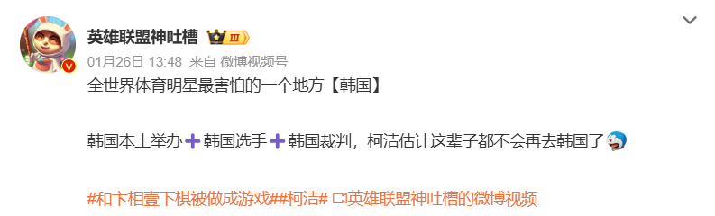
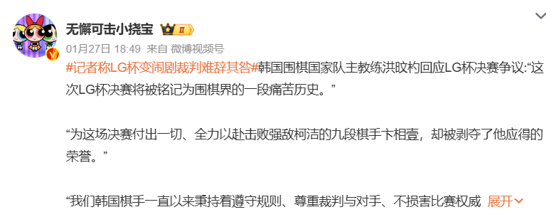
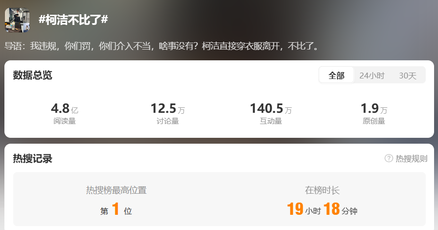

1月22日，第29届LG杯世界围棋棋王战决赛第二局在韩国首尔结束，原以1比0领先的柯洁因两次提子未放置在棋盒盖上，被裁判根据韩国围棋规则判负。
决赛第二局进行至44手时裁判认定柯洁在第18手提子时未将棋子放在棋盒盖上，罚去2目。中方随即以规则并未明确放置棋子的时间而提出异议，并认为判罚过重，但未获韩方同意。
柯洁在第80手时再次未将提子放在棋盒盖上。卞相壹在柯洁落下第82手后起身倒水的间隙，举手向裁判投诉。柯洁虽然迅速将棋子放回棋盒盖上，但裁判仍判定柯洁犯规，本局直接作负。中方随后进行申诉，但无法改变结果 这也是围棋世界大赛决赛中首次出现因犯规判负而导致棋局终止的情况。
韩国棋院自2024年11月8日起实施新版《韩国围棋规则》，规定提子如不放置在棋盒盖上，将警告一次罚2目，警告两次将判负，此项规定适用于韩国棋院主办的各项比赛。 对此，中国围棋代表团当场向韩国方面提出申诉，就规则中未明确放置时间等问题提出异议，并认为判罚过重，“过”“罚”不相匹配。最后韩国棋院裁判委员会经研究，维持本局按既有规则判罚，未来将慎重考虑中方诉求。 此次比赛其中最大的一个争议在于，韩国棋院推出的新规于2024年11月推行，而第29届LG杯开始于2024年5月。按照体育赛事惯例，规则适用的范围不应该溯及规则推行之前开始的赛事，故有人认为，决赛的判罚并不合理
LG杯最终判罚结果落定之后，迅速在网上掀起热议，微博上，LG杯、柯洁等相关话题冲上热搜榜高位。点击以下话题，即可跳转至相关讨论页面。
微博上，网友的讨论截图。
关于“柯洁”的讨论数据
关于“LG杯”的讨论数据
关于“柯洁不下了”的讨论数据
网友讨论词云图
（1）讨论中，韩国、规则成为了高频词。可以看出，许多人对比赛判罚的公正性有所质疑。 许多网友质疑裁判判罚的公正性，认为仅凭对手举报就判定柯洁犯规并输掉比赛过于草率。他们指出比赛应该有更严谨的判罚流程和证据支撑，不能仅仅因为一方的举报就做出决定。部分网友认为规则本身可能存在漏洞或模糊之处，导致在实际判罚中容易产生争议。也有网友呼吁赛事主办方进一步明确和完善规则，避免类似情况再次发生。
（2）中国棋手、柯洁也是高频出现的词语，可以看出网友对柯洁的表现与心态的关注。 网友认为，柯洁作为围棋界的明星棋手，有着辉煌的过往成就。此次在 LG 杯决赛中的意外失利让人感到惋惜，他们纷纷回顾柯洁过去的精彩比赛，将此次失利与他以往的表现进行对比，探讨他在比赛中的状态和心态变化。 而对于柯洁未来的围棋生涯，网友们则看法不一。一部分网友坚信他能够从这次挫折中走出来，继续在棋坛创造佳绩；另一部分网友则担心这次失利会对他的信心和心态产生较大影响，影响他后续的比赛表现。
（3）对手、提子、举报等关键词也展示出网友对韩方选手卞相壹同样十分关注。 一些网友认为卞相壹在比赛中维护自身权益进行举报是合理的；而另一些网友则觉得这种行为在围棋这样注重礼仪和风度的竞技项目中显得不够 “君子”，质疑他的动机和做法。 网友们也对卞相壹的竞技实力进行了分析和讨论，探讨他是否有能力在正常比赛中战胜柯洁，以及他在此次事件后的舆论压力下，后续比赛表现会受到怎样的影响。
情感分布图
通过对#柯洁不比了#话题下网友讨论的情感分析，可以看到，网友大多持中立和正面态度偏多。 因为对于正常网友而言，他们在此次事件后，会发表博文表达对柯洁的鼓励安慰，以及对新规的讨论。 但是也可以看到，负面态度也占据了不小的分量，因为部分网友被此次事件挑起了愤怒、仇恨的情绪，对韩国棋院和韩国棋手展开了谩骂。